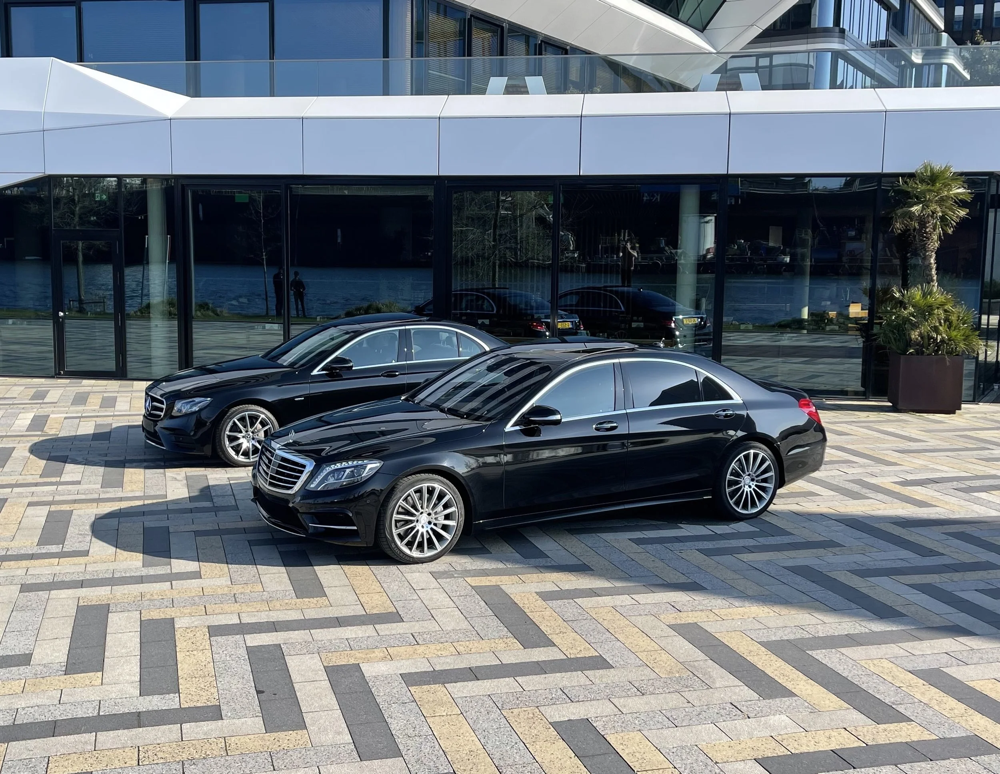

Suited to the city
An E-Class or 5 Series draws the least attention in the centre. For a principal arrival, an S-Class or 7 Series; for four to seven travelling together, a V-Class. All of them are in the fleet.

A private chauffeur for Amsterdam, by the hour, by the day or for the length of a stay.
The house is in Aalsmeer, a short drive from the city and minutes from Schiphol.
In Amsterdam, the hard part is rarely the driving.
It is the stopping. Bridges, cyclists and narrow streets leave few places for a car to wait, so the set-down at each address is thought through before the day begins. You step out at the door; the car moves on without fuss.
Most Amsterdam days run between a hotel, an office on the Zuidas, a lunch in the centre and Schiphol at either end. Some carry on to The Hague by the afternoon.
On hourly work the chauffeur stays with the car, holding nearby, and comes back to the door when you are ready to leave.
A day ahead is usually enough for a day in the city. Several cars, or a stay of several days, are worth arranging a little earlier.
Met inside the terminal and taken into the city, with the flight watched so that an early landing changes nothing. More on Schiphol.
One chauffeur from the first address to the last, waiting between appointments rather than leaving and coming back.
The arrival timed to the door, and the car close by when the evening ends.
Visiting partners and family collected, moved around the city and looked after to your standard.
When the day leaves Amsterdam, the same car and chauffeur go with it.
Set down at the door, not near it.
An E-Class or 5 Series draws the least attention in the centre. For a principal arrival, an S-Class or 7 Series; for four to seven travelling together, a V-Class. All of them are in the fleet.
Car, chauffeur, timings and cost arrive in writing before the day, priced against the day rather than the distance.
Anything around the driving, a table, a room, a guest to collect, sits with The Concierge.
Yes. An hour, an evening or a whole day are all arranged the same way, and on hourly work the chauffeur stays with the car.
In Aalsmeer, a short drive south of Amsterdam and minutes from Schiphol, so the car is never far from the city or the airport.
Yes. Your car is collected from the residence or office, driven to the same standard, and returned as it left.
Yes. Tables, rooms and guests are handled by the concierge, who works alongside the chauffeurs and holds the same itinerary.
Tell us the day. We will write the rest.